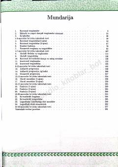

I2Algebra fanidan turli mavzularni qamrab olgan amaliy testlar va mashqlar to'plami.
Ushbu qo'llanma Intelligence Development Center tomonidan tayyorlangan bo'lib, algebra fanidan turli xil tenglamalar, tengsizliklar va funksiyalarni o'z ichiga olgan amaliy mashqlar to'plamidir. Kitobda ratsional, irratsional, ko'rsatkichli va logarifmik tenglamalar hamda progressiyalar bo'yicha test savollari va ularning yechimlari keltirilgan.